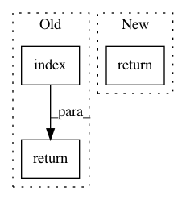

cd83fed56a184063215f932ef768f8834328654c,networkml/featurizers/funcs/host.py,HostBase,_df_proto_flags,#HostBase#,239
Before Change
all_protos = short_row_keys.union(short_frame_protocols) - self.DROP_PROTOS
all_protos_int = 0
for proto in all_protos.intersection(WK_IP_PROTOS):
index = WK_IP_PROTOS.index(proto)
all_protos_int += 2**index
return all_protos_int
def _tshark_all(self, df, srcmacid):
print("calculating intermediates", end="", flush=True)
df["_host_key"], df["_srcip"], df["_dstip"], df["_both_private_ip"], df["_ipv4_multicast"], df["_protos_int"] = zip(*df.apply(self._host_key, axis=1))
After Change
def _df_proto_flags(self, row):
short_row_keys = frozenset(x.split(".")[0] for x, y in row.items() if not pd.isnull(y) and not x.startswith("_"))
return self._encode_df_proto_flags(short_row_keys, row["frame.protocols"])
def _tshark_all(self, df, srcmacid):
print("calculating intermediates", end="", flush=True)
df["_host_key"], df["_srcip"], df["_dstip"], df["_both_private_ip"], df["_ipv4_multicast"], df["_protos_int"] = zip(*df.apply(self._host_key, axis=1))
In pattern: SUPERPATTERN
Frequency: 3
Non-data size: 3
Instances
Project Name: CyberReboot/NetworkML
Commit Name: cd83fed56a184063215f932ef768f8834328654c
Time: 2020-04-01
Author: josh@vandervecken.com
File Name: networkml/featurizers/funcs/host.py
Class Name: HostBase
Method Name: _df_proto_flags
Project Name: kwgoodman/numerox
Commit Name: f9b010c181c3a4eee28d5e53d738afee4e837aaf
Time: 2018-12-17
Author: kwgoodman@gmail.com
File Name: numerox/tournament.py
Class Name:
Method Name: tournament_str2int
Project Name: ntucllab/libact
Commit Name: b9aadc05cf2eebe34dda99c47cc727743e911aa2
Time: 2015-11-30
Author: wu1988100483@gmail.com
File Name: libact/labelers/ideal_labeler.py
Class Name: IdealLabeler
Method Name: label